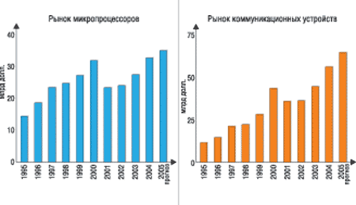

Евгений Рудометов
Rudometov@mail.ru
В статье использованы открытые материалы Форума IDF.
Традиционный Intel Developer Forum, крупнейшая в отрасли технологическая конференция для разработчиков аппаратных средств и ПО, проводится уже восьмой год. На заседаниях IDF, проходящих несколько раз в году в разных странах мира, ключевые игроки отрасли обсуждают самые современные технологии и продукты электронной отрасли, предназначенные для персональных компьютеров, серверов, коммуникационного оборудования и карманных вычислительных устройств. Необходимо отметить, что эти отрасли определяют лицо современной цивилизации и оказывают влияние на развитие экономики практически всех стран мира, начиная от технологически развитых и кончая странами третьего мира.
Недавний Форум, состоявшийся в Сан-Франциско (Калифорния, США) с 7 по 9 сентября, открыл осеннюю серию Форумов Intel для разработчиков этого года, организуемых под общим девизом "Сотрудничество без преград". В его работе принимало участие свыше 5,5 тыс. специалистов из 45 стран, а на многочисленных стендах была представлена продукция 280 компаний. Для проведения следующих мероприятий осенней серии IDF 2004 г. определены Бангалор (Индия), Шэньчжень (КНР), Москва, Тайбэй (Тайвань) и Сан-Паулу (Бразилия).
Участники Форума познакомились с новыми технологиями, встретились со специалистами Intel и ведущими экспертами отрасли. Для специалистов, прибывших на Форум, было организовано более 150 технических сессий в следующих ключевых областях:
- мобильные технологии - разработка гибких решений для беспроводного стиля жизни;
- повышение ценности корпоративной ИТ-инфраструктуры - внедрение инноваций, разработка и развертывание масштабируемых корпоративных ИТ-инфраструктур и надежных клиентских ПК для повышения продуктивности работы и прибыльности;
- интеллектуальные и интуитивно понятные вычислительные корпоративные системы - ускорение развития и получение преимуществ с помощью мощных клиентских ПК;
- инновации в коммуникационной инфраструктуре - использование открытых стандартных модульных систем для быстрого развития и модернизации;
- развитие идеи цифрового дома - свобода выбора мультимедийных средств и управления цифровой информацией благодаря совместимым сетевым системам.
По традиции на Форуме с ключевыми докладами выступили представители высшего руководства Intel, которые рассказали о новых и еще только разрабатываемых технологиях корпорации и о ее видении будущего.
Выступая на Форуме, президент и главный директор по операциям корпорации Intel Пол Отеллини (Paul Otellini) привел данные, иллюстрирующие развитие отрасли (рис. 1). После резкого снижения спроса (а следовательно, и производства) уже третий год наблюдается стабильный рост. Более того, в продажах процессоров и компьютеров отрасль достигла докризисного уровня, а в сфере коммуникаций даже превзошла результаты благополучного 2000 г., отличавшегося рекордными за весь предшествующий период экономическими показателями.
|  |
| Рис. 1. Динамика продаж микропроцессоров и коммуникационных устройств.
|
Процессорные технологии и НМС
В своем докладе на Форуме в Сан-Франциско президент Intel Пол Отеллини рассказал о новых тенденциях и технологиях, которые будут определять направление развития ИТ-индустрии на ближайшую перспективу.
Продолжая увеличивать производительность процессоров, корпорация Intel, как и ранее, занимается разработками, ориентированными на повышение эффективности использования компьютеров, включая реализацию многозадачности, безопасности, надежности, управляемости и беспроводной связи.
Центральным компонентом новой стратегии Intel станет обновление всех основных семейств процессоров. Вместе с увеличением частоты рост производительности процессоров будет обеспечен новыми архитектурами микросхем. Уже в 2005 г. станут реальностью процессоры с двумя ядрами - в корпусе каждого процессора будет находиться, по сути, два процессора, способных работать параллельно. А в последующие несколько лет появятся процессоры с еще большим числом ядер.
Многоядерные процессоры становятся реальностью благодаря внедрению новых полупроводниковых технологических процессов, оперирующих все меньшими масштабами. Так, уже в 2005 г. начнется массовый выпуск микросхем, транзисторы которых будут иметь размеры 65 нм. В ходе своего доклада Пол Отеллини продемонстрировал кремниевую пластину с кристаллами микросхем, созданными по технологии 65 нм, интенсивно осваиваемой корпорацией Intel. Здесь уместно напомнить, что уменьшение масштаба обеспечивает рост числа элементов, составляющих основу внутреннего устройства процессоров. И если современные модели Intel Pentium 4 на основе ядра Prescott состоят из более чем 120 млн транзисторов, то продемонстрированный на IDF двухъядерный процессор Intel Itanium 2 (кодовое наименование Montecito) содержит 1,7 млрд транзисторов и 24 Мбайт встроенной кэш-памяти (по 12 Мбайт на каждое ядро). Кстати, процессор архитектуры Montecito будет еще и многопоточным, а это означает, что одно изделие, включающее два ядра, операционная система будет видеть уже как четыре процессора, что обеспечит дополнительный рост производительности.
Следует отметить, что Montecito - лишь один из нескольких проектов многоядерных процессоров, которые Intel представила на Форуме. По мнению специалистов корпорации, в 2006 г. более 40% ПК, 85% серверов и более 70% ноутбуков будут иметь двухъядерные процессоры. Кстати, несмотря на постоянную критику известного закона Мура, раздающуюся в последнее время все чаще и чаще, его положения продолжают действовать. Об этом свидетельствуют не только новые процессоры корпорации Intel, но и остальные комплектующие и элементы.
Повышая быстродействие, корпорация Intel особое внимание уделяет обеспечению безопасности, надежности, управляемости, беспроводным вычислениям и многозадачным режимам, нередко реализуемым в рамках единых концепций и платформ. Как подчеркнул Пол Отеллини, конвергенция стала реальностью и в настоящее время наблюдается объединение в одном устройстве вычислительных и коммутационных возможностей.
Как дальнейшее расширение этих возможностей можно рассматривать совершенствование беспроводных технологий, например, уже хорошо известного радиоинтерфейса Wi-Fi, а также стремительно развивающегося WiMAX. Как доказательство своих серьезных намерений в данном секторе рынка, Intel представила готовую микросхему Rosedale (рис. 2) - первый в мире полностью интегрированный WiMAX-чип, соответствующий спецификации IEEE 802.16-2004 и реализующий "беспроводной DSL" на значительных расстояниях. Помимо WiMAX-компонентов, в Rosedale имеются функции 10/100 Ethernet, встроенные средства безопасности, TDM-контроллер (временное разделение каналов), позволяющий одновременно реализовывать прием-передачу данных и голоса, а также ряд сервисных функций для работы с мультимедийными данными.
 |
| Рис. 2. Пол Отеллини, президент и главный директор Intel по операциям, демонстрирует решение на основе микросхемы Rosedale.
|
Расширение возможностей аппаратных средств, включая проводное и беспроводное объединение компьютеров, требует и соответствующих средств управления массивами вычислительных устройств. Одна из таких новейших технологий, получившая название Intel Active Management (IAMT), появится в будущих наборах микросхем Intel, чтобы упростить управление ИТ-инфраструктурой. Технология IAMT предназначается для поддержки управления парком ПК, использующим различные платформы - от карманных коммуникационных устройств до серверов. Она поможет ИТ-менеджерам разрешить ситуацию, когда около 80% ИТ-бюджета расходуется на управление и поддержку вместо того, чтобы идти на разработку и внедрение инновационных решений, повышающих продуктивность работы пользователей.
Помимо новой функциональности, корпорация Intel планирует включить в будущие процессоры и наборы микросхем специальные средства виртуализации (известны под кодовым названием Vanderpool, или VT), которые позволят одновременно запускать на компьютере несколько ОС и прикладных программ, значительно повышая гибкость и надежность эксплуатации систем. Кроме того, будущая технология безопасности LaGrande (LT) поможет защитить корпоративную и частную информацию от несанкционированного доступа и скрытых разрушающих действий, включая спланированные программные атаки, вирусы, черви и т. п. А реализованные и только разрабатываемые мультимедийные технологии откроют новые возможности для дома и офиса.
Напомним, что отдельные элементы технологий LT и VT, а также EM64T уже присутствуют в ядре Prescott. К сожалению, их реализация в значительной степени сдерживается неразвитостью соответствующего ПО. Как ожидается, поддержка LT и VT появится в операционной системе Longhorn, а EM64T - в Windows 64 bit.
ИТ-инфраструктура
Развитие идей, озвученных Полом Отеллини, нашло свое продолжение в последующих докладах. Так, Дебора Конрад (Deborah Conrad), вицe-прeзидeнт подразделения Sales and Marketing Group и генеральный менеджер подразделения Solutions Market Development Group, рассказала об инициативе SOE (Service Oriented Enterprise). Суть SOE заключается в модульном подходе к инфраструктуре предприятия. SOE сочетает в себе элементы мобильности, сетевых вычислений и управляемости. Она также предоставляет основу для внедрения таких услуг, как RFID и телефония VoIP. Цель инициативы SOE - повысить отклик ИТ-инфраструктуры и управляемость различных систем по мере того, как компании набирают все большие объемы данных. Дебора Конрад иллюстрировала свое выступление примерами внедрения SOE в крупных компаниях, таких, как Procter&Gamble, ряд нефтяных и газовых корпораций.
О некоторых деталях развития ИТ-инфраструктуры самой корпорации Intel рассказал Прасад Рампалли (Prasad Rampalli), вицe-прeзидeнт службы Finance and Enterprise Services, руководитель и ведущий разработчик подразделения Architecture and Integration Platforms. В частности, он отметил, что большинство сотрудников Intel имеют мобильные компьютеры и входят в корпоративную сеть с помощью этих устройств. Часто это осуществляется с использованием беспроводных технологий - вариантов Wi-Fi (IEEE 802.11.a/b/g).
Серверные процессоры
Планы корпорации в серверном секторе компьютерного рынка, основу которого составляют процессоры Intel Xeon и Intel Itanium 2 в одно-, двух- (DP) или многопроцессорных (MP) вариантах, огласил Аби Талвалкар (Abhi Talwalkar), вицe-прeзидeнт и гeнeральный мeнeджeр подраздeлeния Enterprise Platforms Group. Два первых процессора Intel Xeon MP на базе процесса 90 нм, известных под кодовыми именами Cranford и Potomac, появятся в первой половине 2005 г. В них будет включена поддержка технологии Intel EM64T, обеспечивающей 64-разрядные вычисления на усовершенствованных 32-разрядных процессорах. Кроме того, в этих процессорах будут реализованы технологии снижения тепловыделения и повышения надежности вычислений, а также архитектура PCI Express и память DDR2.
Соответствующее развитие получат и процессоры Intel Itanium 2. Усовершенствованный двухъядерный процессор с кодовым названием Montvale станет первым процессором Itanium на базе технологии 65 нм. Его выпуск планируется после Montecito. Многоядерные же решения архитектуры IA-64 появятся примерно в 2007 г., после разработки и выпуска 65-нм ядра Tukwila, планируемого для сектора многопроцессорных систем. Для двухпроцессорных решений будет создан и выпущен чип архитектуры ядра Dimona.
Остается добавить, что в будущих процессорах для корпоративного сектора будет реализована технология виртуализации Silvervale (серверный аналог Vanderpool) и другие средства обеспечения надежности и безопасности.
Цифровой дом и офис
Развивая серверный сектор, корпорация не оставляет своим вниманием и массовый рынок. О планах и разработках Intel, ориентированных на цифровой дом и офис, рассказал на IDF вицe-прeзидeнт и гeнeральный мeнeджeр подраздeлeния Desktop Platforms Group Билл Сью (Bill Siu).
В планы Intel по созданию многоядерных процессоров для всех секторов рынка входит выпуск двухъядерного процессора для настольных ПК в 2005 г. А уже к новогодним праздникам в продажу поступит несколько вариантов мультимедийных ПК, ориентированных на сферу досуга, - Entertainment PC. Созданные на базе процессора Intel Pentium 4 с технологией Hyper-Threading и НМС Intel 915 Express, EPC сочетают в себе возможности аудио- и видеоустройств с мощностью ПК. Они выполнены в виде компактного тонкого устройства, способного легко вписаться в интерьер современного жилища. ЕРС дает возможность собирать личную фото-, аудио- и видеотеку и просматривать ее с помощью одного пульта дистанционного управления. Для поддержки этих возможностей производители ПО разрабатывают разнообразные приложения; в частности, в этой сфере Intel активно сотрудничает с компаниями Activision, Digital 5, Electronic Arts, Movielink, Napster и Real Networks. Как пример успешного сотрудничества можно привести разработку адаптера Netgear DMA - с помощью этого устройства пользователи смогут переносить защищенную мультимедийную информацию с ПК на другие электронные устройства.
На Форуме Intel объявила о создании спецификации 2004 ЕРС Platform. Выпускать Entertainment РС будут такие ведущие ОЕМ-партнеры, как компании Alienware и НР. Ну а программное обеспечение для них - это уже компетенция таких компаний, как Microsoft. О работах последней в этом направлении сообщил в ходе доклада Билла Сью генеральный менеджер Microsoft Windows eHome Division Джо Бельфиоре, продемонстрировавший работу Windows Media Center.
Билл Сью уделил внимание и концепции цифрового офиса. Основная суть ее заключается в том, чтобы предоставить возможность неограниченного во времени и пространстве доступа к сетевым ресурсам и обеспечить постоянную беспроблемную связь. Такая потребность связана прежде всего с тем, что бизнес стремительно становится глобальным, а это требует соответствующего уровня выполнения офисных задач, включая элементы и технологии связи. Кроме того, в последнее время все более востребованными становятся решения для безопасного хранения, обработки и передачи информации.
Тщательно проанализировав все перечисленные проблемы, корпорация Intel определила четыре стратегических направления развития цифрового офиса:
- разработка средств управления ИТ-инфраструктурой;
- разработка средств коллективной работы;
- создание средств круглосуточной связи;
- информационная поддержка.
Для всех этих направлений Intel разрабатывает соответствующие технологии и платформы.
Мобильный сегмент
Разумеется, корпорация Intel продолжит разрабатывать средства и технологии мобильного сегмента, развитие которого идет очень высокими темпами, превышающими, по некоторым оценкам, 20% в год (в некоторых регионах - более 40%). Перспективные планы корпорации в этой области традиционно озвучил Ананд Чандрасехер (Anand Chandrasekher), вице-президент и генеральный менеджер подразделения Mobile Platforms Group.
В ходе своего выступления г-н Чандрасехер продемонстрировал ряд интересных изделий, в частности, доску для виндсерфинга, снабженную средствами беспроводной передачи информации Wi-Fi, и высоконадежный ноутбук, сохранивший работоспособность даже в аквариуме (рис. 3). Кроме того, он представил ряд изделий на основе процессоров Intel XScale, таких, как PDA и видеоплееры с мультимедийными акселераторами, разработанными корпорацией Intel.
 |
| Рис. 3. Ананд Чандрасехер, вице-президент и генеральный менеджер подразделения Mobile Platforms Group, демонстрирует доску для виндсерфинга со средствами Wi-Fi и высоконадежный ноутбук.
|
Г-н Чандрасехер также рассказал о работах по увеличению безопасности беспроводной передачи данных в мобильных устройствах и разработке двухъядерных моделей мобильных процессоров. Эти планы будут реализованы в мобильной платформе следующего поколения с кодовым названием Napa. Платформа будет представлена мобильным двухъядерным 65-нм процессором Yonah с поддержкой технологий LaGrande и Vanderpool, НМС Calistoga с улучшенным графическим ядром и контроллером беспроводной связи Golan. Развитие технологий энергосбережения и совершенствование аккумуляторов (например, высокоемких цинковых аккумуляторов от Zinc Matrox Power) обеспечит длительное автономное функционирование ноутбуков - как предполагается, до 8 ч к 2010 г.
Проблемы Интернета
Проблеме развития глобальной информационной сети был посвящен отдельный доклад, сделанный Патриком Гелсингером (Patrick P. Gelsinger), вице-президентом и главным директором Intel по технологиям. На это мероприятие он пригласил Винтона Серфа (Vinton Cerf), одного из создателей сети Интернет. В своем выступлении г-н Гелсингер отметил, что глобальная сеть, созданная исходно для передачи исключительно простых (конечно, по современным меркам) компьютерных данных, в настоящее время служит средой для пересылки самой разнообразной мультимедийной информации разной структуры и объема. Кроме того, за время существования и развития глобальной сети многократно увеличилось количество ее пользователей, и этот процесс продолжается ускоренными темпами. Все это порождает массу проблем, среди которых все большую роль играют вопросы безопасности и бесперебойной работы сети.
Для решения проблем Патрик Гелсингер предложил в корне изменить структуру глобальной сети, повысив ее интеллектуальный уровень за счет ускоренного внедрения компьютеров, созданных на основе высокопроизводительных процессоров с аппаратной реализацией соответствующих технологий, поддержанных специализированными программными средствами. В качестве основы узлов сети г-н Гелсингер рекомендовал решения корпорации Intel.
Разработки партнеров
В заключение отметим, что на Форуме было анонсировано большое число перспективных технологий и изделий, таких, как законченные решения WiMAX, новейшие платформы для цифрового дома и мобильных систем, интерфейсы и изделия Wireless USB и UWB (сверхширокополосный беспроводной доступ до полугигабайта в секунду), средства развития Интернета, CE-ATA, Serial ATA 3 Гбит и многое другое.
В частности, многие известные компьютерные компании на выставке, проходившей в рамках Форума, представили разнообразные рабочие станции и серверные системы на основе одно-, двух- и многопроцессорных решений семейства Intel Itanium 2 и Intel Xeon - разного конструктива и с широким диапазоном функциональных возможностей. Значительная часть систем была создана на основе процессоров с ядром Nocona (90 нм, 200 МГц FSB, максимальная тактовая частота в настоящее время 3,6 ГГц). Эти процессоры, как известно, поддерживают 64-разрядные вычисления на основе технологии EM64T и оснащены технологией снижения энергопотребления DBS (demand-based switching).
Немало было и компьютеров, основу которых составляют процессоры конструктива LGA775 с поддержкой модулей памяти DDR2, плат PCI Express и накопителей с последовательным интерфейсом. Все это, кстати, свидетельствовало о принятии отраслью данных стандартов и поддерживающих их технологий.
Конечно, было представлено и множество мобильных компьютеров - начиная с широкой гаммы ноутбуков, различающихся архитектурой, производительностью, массой, временем автономной работы и дизайном, и заканчивая PDA, смартфонами и телефонами разных конструкций и параметров. Ряд фирм предлагали законченные аппаратно-программные решения, включающие беспроводные средства передачи информации. Кроме того, были представлены решения для IP-телефонии и передачи голосовой информации через интерфейсы Wi-Fi и Bluetooth. Но это темы уже других статей.
***
Остается напомнить, что в предыдущие годы Форум IDF уже трижды проводился в России - два раза в Москве и один раз в Новосибирске. Это свидетельствует о повышенном внимании, которое корпорация уделяет нашей стране. А 19-20 октября этого года Форум IDF снова состоялся в России, уже в четвертый раз. Местом проведения осенней сессии традиционно была выбрана Москва.